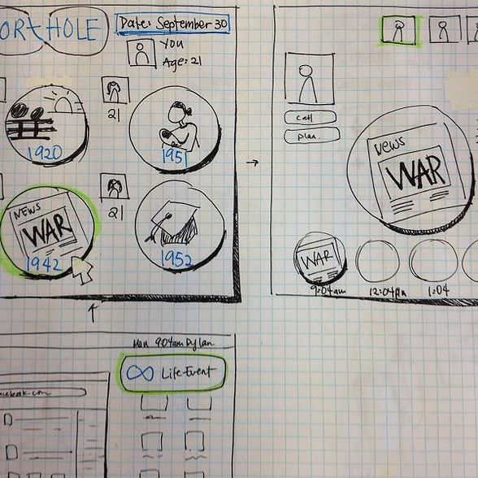
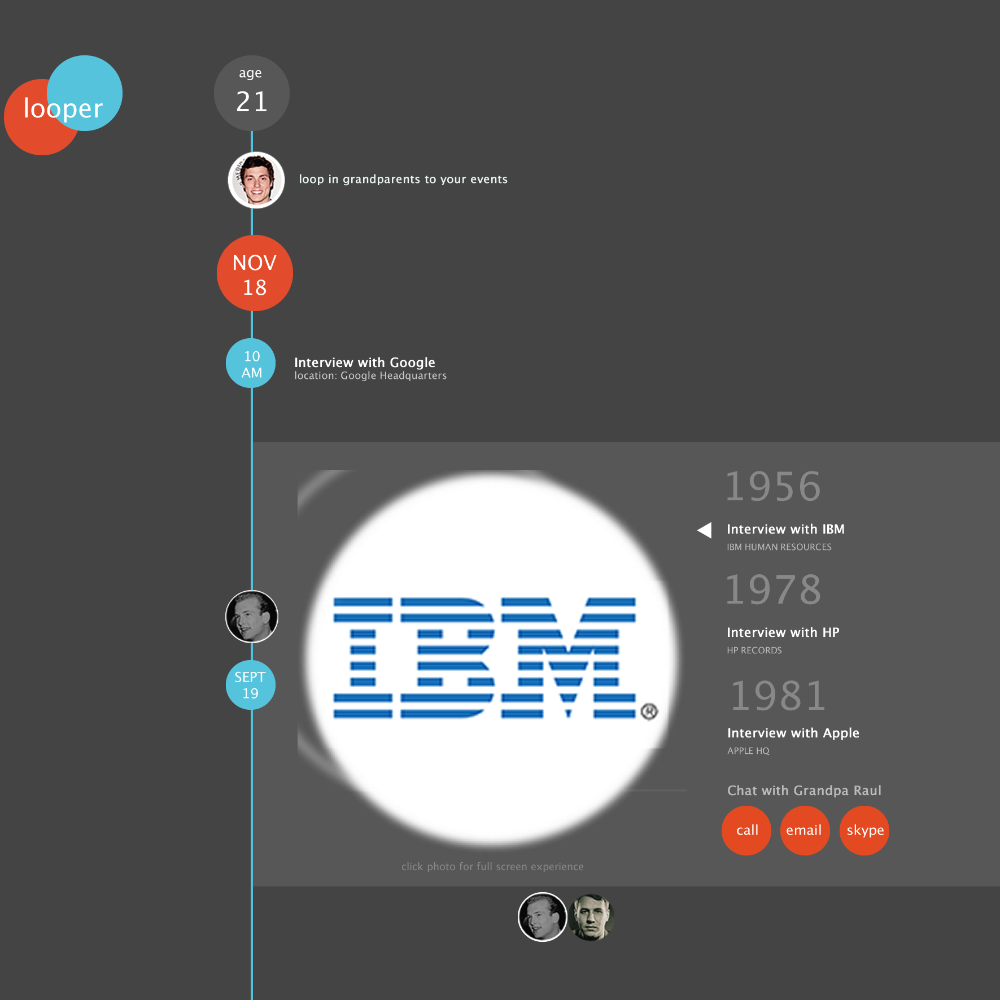

In Fall 2012, I took my first design course. CS 160: User Interface Design and Development is a class on designing, protoyping and evaluating user interfaces. Each semester, students take on a project that follows the human-centered design process. Our project was Looper. An app that reveals your grandparents past in real-time.
Problem
Young people are incredibly busy. Finding time to spend with their grandparents can be difficult, and the generation gap can make it seem like our grandparents just won't understand what we're going through.
Solution
Looper superimposes your events with your grandparents' events into a single timeline. Just like how Facebook provides live feeds from your friends, this application will show "live feeds" from your grandparents' past life.
For example, if it's May 20, 2013 and you're 21, the application will pull events (e.g. news articles, personal experiences) from your grandparents' lives from May 20 when they were 21 (e.g. 1956, 1967...etc).